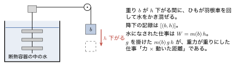
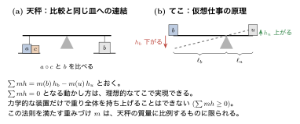
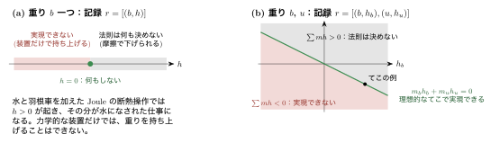

4 仕事の力学的な基礎
力学では、物体に一定の力 \(\vec F\) が働き、物体が変位 \(\Delta \vec x\) だけ動くとき、力がした仕事を内積 \(\vec F \cdot \Delta \vec x\) と定める。 仕事の重要な例は重力によるものである。 質量 \(m\) の物体に働く重力は鉛直下向きで大きさ \(m g\) なので、物体が高さ \(h\) だけ下がると、重力は \(m g h\) の仕事をする。 水平方向の動きは寄与しない。
熱力学で系になされた仕事を測るときも、この重力の仕事を使う。 Joule の実験 [ 16 ] では、重りが下がる間にひもが水中の羽根車を回し、水をかき混ぜる (図 4.1)。 重りに重力がした仕事 \(m g h\) が、ひもと羽根車を通して水に渡る。

操作的な構成では、力を原始概念にしない。 力を測るには、さらに別の手順が要るからである。 そこで仕事を、天秤で測る重りの質量と、長さの目盛りで測る降下量だけから定める。
操作的な定義：重りの質量と降下量の積の和 \(\sum m(b)\, h_b\) を仕事とする (定義 49)。重力加速度は使わない。単位は「単位質量の重りを単位長さ下げる仕事」である。
力学の仕事との一致：重力 (定義 36) がした仕事の和 \(\sum \vec F_b \cdot \Delta \vec x_b\) は \(g \sum m(b)\, h_b\) に等しい (定理 38)。\(g\) は力の単位の換算係数である。
重力の大きさが天秤の目盛りに比例すること、鉛直下向きと天秤の比較が場所によらないことは、経験則として置く (経験則 37)。 操作的に決めた仕事と力学の仕事が一致することは、この仮定の下での定理になる。
もう一つの問題は、重りの側で測った量を、系になされた仕事とみなしてよいかである。 ひもや滑車やてこは、重りと系の間で仕事を受け渡す。 理想的な装置は仕事を増やしも減らしもしない。 釣り合ったてこでは、下がった側の \(m h\) と上がった側の \(m h\) が等しい (図 4.2)。 これは仮想仕事の原理であり、この章ではそれを法則として定め (定義 39)、天秤の質量がそれを満たすことを経験則として置く (経験則 40)。 この法則を満たす重みづけは、天秤で測った質量に比例するものに限られる (定理 42)。 Newton の運動方程式や慣性質量は使わない。

重りとは、系の外に置く固い物体で、天秤に載せられ、ひもで吊るせるものをいう。 形と温度は変わらないものとし、その状態は高さだけで指定する。 重りは仕事を受け渡すための道具であり、熱力学で調べる対象とは区別する。 重りの質量は天秤 (定義 30) で、高さは長さの目盛りで測る。
重りの比較は天秤の傾きの向き、連結は同じ皿に一緒に載せることである。
重りの天秤による比較と連結は外延的構造をなす。
系を作るのに使う物質の種類 (成分) の集まりを \(C\) とする。 状態 \(X\) の系の組成 \(\mathrm{comp}\, X : C \to \mathbb {R}_{\ge 0}\) とは、成分ごとに、系を作るとき天秤で量り入れた質量である。
天秤の連結の性質から \(\mathrm{comp}(X + Y) = \mathrm{comp}\, X + \mathrm{comp}\, Y\)、分割の定義から \(\mathrm{comp}(tX) = t\, \mathrm{comp}\, X\) となる。 つまり組成の各成分は示量的な関数である。 成分が一つなら、組成は系の質量そのものである。
\(\mathrm{Feasible}(r)\) は、てこや滑車などの力学的な装置で、降下の記録 \(r\) のとおりに重りを動かし、装置を元の配置に戻せることをいう。
重みづけ (重りの集まりの上の目盛り) \(m\) に対し、\(\Sigma _m(r) := \sum _{(b, h) \in r} m(b)\, h\) とおく。
吊るした重りが静止したときにひもが指す向きを鉛直下向きといい、その単位ベクトルを \(\vec e_{\downarrow }\) と書く。 変位 \(\Delta \vec x\) の降下量を \(\vec e_{\downarrow } \cdot \Delta \vec x\) とする。
吊るした重り \(b\) がひもを引く力を、\(b\) に働く重力という。
天秤は、二つの重りがひもを引く強さを比べ、同じ皿に載せた重りの引く強さを合わせる手順である。 したがって天秤の目盛りは、重力の大きさの目盛りでもある。
重力の向きは鉛直下向きで、大きさは天秤の目盛り \(m(b)\) に比例する：\(\vec F_b = m(b)\, g\, \vec e_{\downarrow }\)。
鉛直下向きの向きと天秤の比較の結果は、実験室の中で場所によらない。
ばねばかりなど別の手順で測った力の目盛りは、重りについては天秤の目盛りと両立する。
\(g\) は、力を天秤とは別の単位 (ニュートンなど) で表すときの換算係数である。
力学の仕事を \(\vec F \cdot \Delta \vec x\) とする。 重り \(b\) の変位を \(\Delta \vec x_b\)、その降下量を \(h_b := \vec e_{\downarrow } \cdot \Delta \vec x_b\) とすると、重りたちに重力がした仕事の和は
内積の線形性から \(\vec F_b \cdot \Delta \vec x_b = m(b)\, g\, (\vec e_{\downarrow } \cdot \Delta \vec x_b)\)。

重みづけ \(m\) が力学の法則を満たすとは、次の二つが成り立つことをいう。
\(\mathrm{Feasible}(r)\) なら \(\Sigma _m(r) \ge 0\)。
\(\Sigma _m(r) = 0\) なら \(\mathrm{Feasible}(r)\)。
一つ目は、装置だけで重り全体を持ち上げることはできないということである。 二つ目は、釣り合う動かし方は理想的な (摩擦のない) てこと滑車で実現できるということである。 合わせて、仮想仕事の原理を手順の言葉で述べたものになる。
天秤の質量目盛りは力学の法則を満たす。
\(m, m'\) がともに法則を満たし \(\Sigma _m(r) = 0\) なら \(\Sigma _{m'}(r) = 0\)。
\(r\) と、上下を逆にした記録は、どちらも \(\Sigma _m = 0\) なので理想的な装置で実現できる。 \(m'\) についての法則から \(\Sigma _{m'}(r) \ge 0\) かつ \(-\Sigma _{m'}(r) \ge 0\)。
重り \(b\) を \(m(u)\) だけ下げ、\(u\) を \(m(b)\) だけ上げる記録は \(\Sigma _m = 0\) を満たす。 補題から \(m'(b)\, m(u) = m'(u)\, m(b)\)。